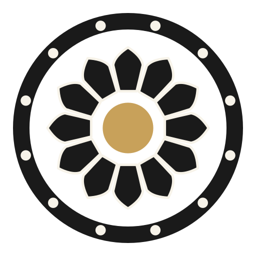
64
32
E · patra
The shield — each petal fills its whole twelfth of the circle, only a seam apart, tips forming a crown. The boldest and most modern; strongest at small sizes.
Everything frozen except the petal outline: base on the jaladhari, tips at .70 R, twelve at 30°, the Shivalinga gold at the hub. Each silhouette shown as the single petal · the bare corolla · seated in shila (the leading frame) · 64/32 px. The petal you rejected sits at top, dimmed, purely for calibration. Whichever wins gets applied across all five candidates — the petal is a system-wide decision, not a per-design one.
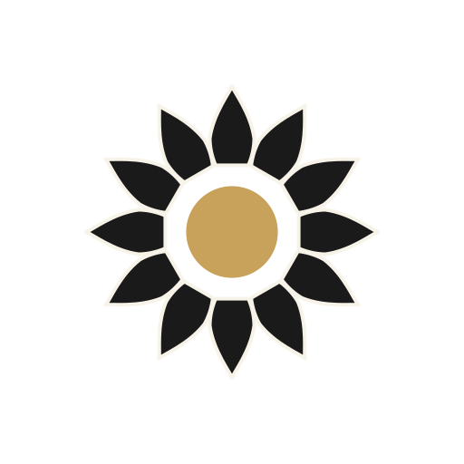
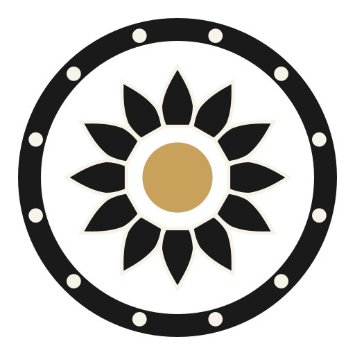
reference · the rejected petal
The rejected one, for calibration only — belly at a third, long thin taper. What the options below are measured against.
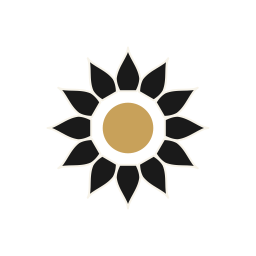
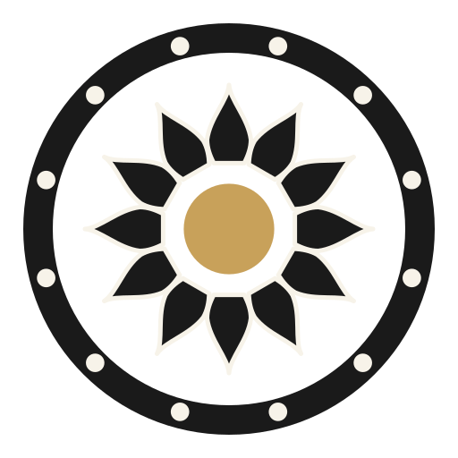
A · shastra
The temple flame — a full convex belly carried low, then the ogee: the line breathes inward before rising to the point. The petal carved on stone plinths (padma-pitha).
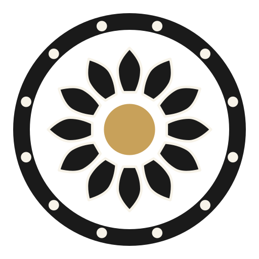
B · marquise
The yantra petal — a serene pointed oval, belly at the very middle, both curves calm and equal. The petal of manuscript mandalas and mehndi lotuses.
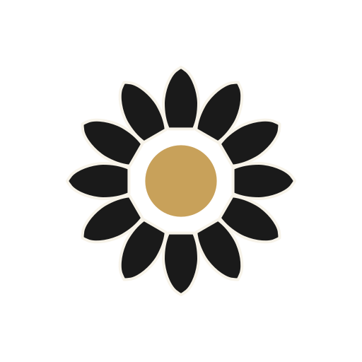
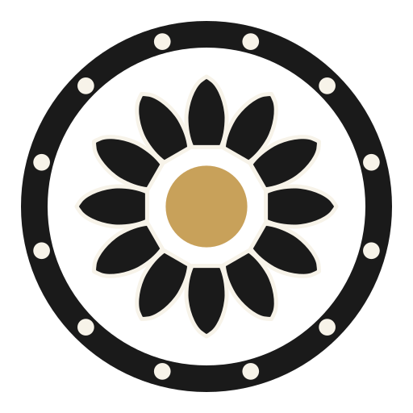
C · mukula
The bud — plump, soft-shouldered, closing to a small nib rather than a spike. The gentlest of the six; the lotus of Ajanta's painted ceilings.
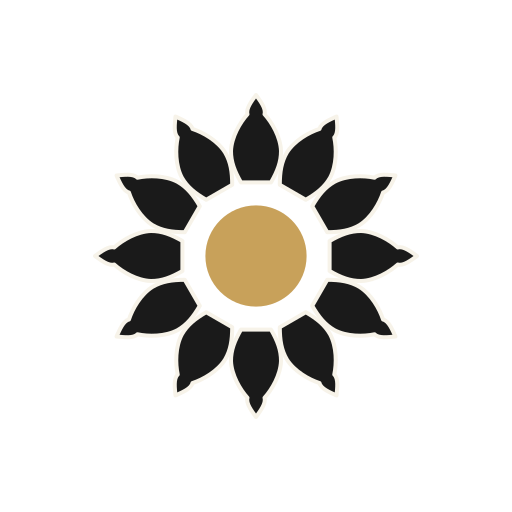
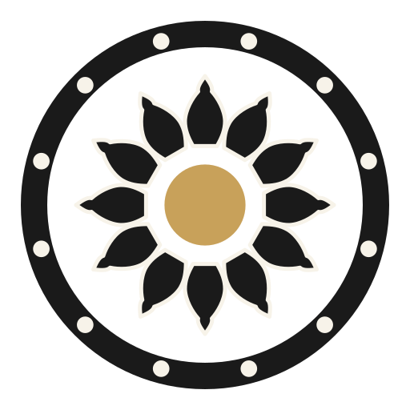
D · kalasha
The dome — a full bulb gathered in by a true waist, then finishing like a finial. Each petal a tiny kalasha; the most ornamental.

E · patra
The shield — each petal fills its whole twelfth of the circle, only a seam apart, tips forming a crown. The boldest and most modern; strongest at small sizes.
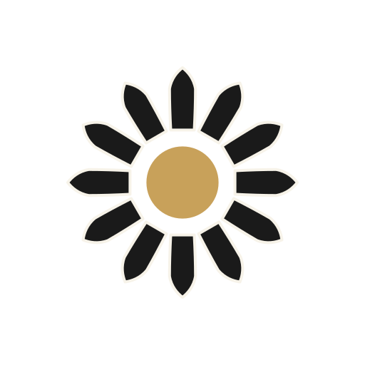
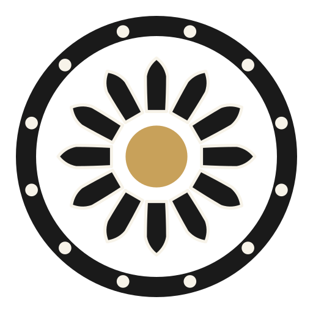
F · shikhara
The lancet — sides nearly parallel, then a decisive pointed arch, like a spire window. The most architectural and upright.